Conteúdo: População Economicamente Ativa (PEA); Setores econômicos; Fatores do
desenvolvimento: educação, saúde, alimentação;
Objetivo: Comparar dados sobre educação, saúde, moradia, poder de consumo e outros para
entender os determinantes do desenvolvimento. Relacionar o desenvolvimento econômico com as diferentes
situações de distribuição da população entre os três setores da economia.
Digite seu nome
Introdução
Na aula anterior, exploramos as complexidades das migrações
internacionais, descobrindo por que as pessoas deixam suas terras natais em busca de novas oportunidades e
como esses movimentos afetam as regiões de origem e destino.
Hoje, nossa jornada nos leva a um tema igualmente fascinante e importante: desenvolvimento e qualidade de
vida. Vamos mergulhar nas nuances desse conceito e entender por que nem sempre é válido comparar países como
mais ou menos desenvolvidos.
Ao final desta aula, teremos uma compreensão mais profunda das causas e características do desenvolvimento em
todo o mundo.
Um panorama do mundo atual
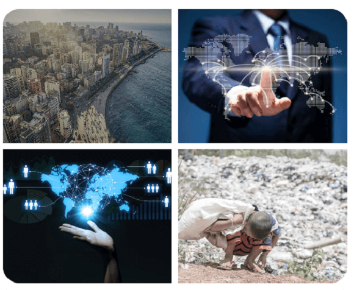
Fonte: : https://www.pexels.com
Nossa jornada pelos fatores do desenvolvimento, o que não deixa de ser um tema complexo. Comparar nações
simplesmente com base em números econômicos não reflete a realidade da qualidade de vida das pessoas
Para compreender verdadeiramente o desenvolvimento, devemos adotar uma abordagem holística (perceber o todo)
que considere não apenas o crescimento econômico, mas também os fatores sociais, ambientais e culturais que
moldam a vida das pessoas.
É possível promover um desenvolvimento genuíno e equitativo em todo o mundo? Já pensou sobre isso?
População Economicamente Ativa (PEA): Entendendo o Papel-Chave
A População Economicamente Ativa, ou PEA, é um termo essencial quando se trata de entender como uma sociedade
funciona em termos de trabalho e economia. Ela engloba todas as pessoas em idade ativa, geralmente entre 15
e 64 anos, que estão aptas a trabalhar. Dentro desse grupo, podemos identificar duas categorias principais:
as pessoas ocupadas, que estão atualmente empregadas e desempenham uma atividade
remunerada, e as pessoas desocupadas, que fazem parte da PEA, mas estão em busca de
oportunidades de emprego.
Pessoas Ocupadas - Este grupo refere-se às pessoas que estão atualmente empregadas e exercem uma atividade
remunerada. São indivíduos que contribuem ativamente para a produção de bens e serviços, desempenhando um
papel crucial na economia de um país.
Pessoas Desocupadas - Incluem-se aqui as pessoas que fazem parte da PEA, mas não têm emprego no momento.
Essas pessoas estão em busca de oportunidades de emprego e podem enfrentar desafios relacionados ao
desemprego. A taxa de desemprego é um indicador-chave usado para medir o nível de desocupação na PEA.
Setores Econômicos
A economia de um país é frequentemente dividida em três setores principais: o setor primário, o setor
secundário e o setor terciário. Cada um desses setores desempenha um papel fundamental na produção e
distribuição de bens e serviços.
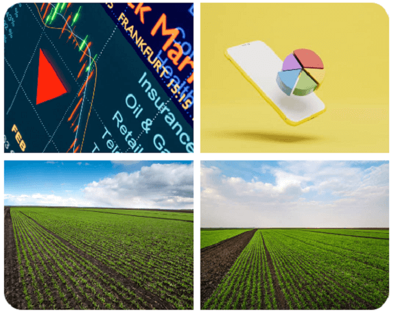
Fonte: : https://www.pexels.com
Setor Primário: Este é o setor que envolve atividades relacionadas à agricultura, pecuária,
pesca, silvicultura e extrativismo. No setor primário, as pessoas estão diretamente envolvidas na produção
de matérias-primas, como alimentos e recursos naturais.
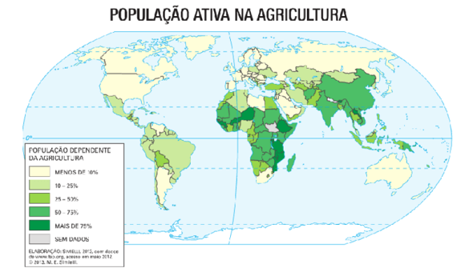
Fonte: Simielli.
Setor Secundário: O setor secundário abrange as indústrias de transformação e produção.
Aqui, os produtos brutos do setor primário são processados e transformados em bens manufaturados. Exemplos
incluem a indústria automobilística, têxtil e de construção.
Fonte: https://www.pexels.com
Setor Terciário: O setor terciário concentra-se em serviços. Isso inclui uma ampla gama de
atividades, como educação, saúde, comércio, turismo, tecnologia da informação e finanças. O setor terciário
é frequentemente considerado um indicador do desenvolvimento de um país, pois reflete a diversificação da
economia e a criação de empregos em áreas de maior valor agregado.
Fonte: https://www.pexels.com
Inserção da Mulher no Mercado de Trabalho: Uma Mudança Significativa
Essa mudança é notável ao examinarmos dados globais sobre a participação das mulheres no mercado de
trabalho. De acordo com o Banco Mundial, a taxa de emprego feminino global aumentou consideravelmente nas
últimas décadas. Em 1990, a taxa de participação feminina na força de trabalho era de aproximadamente 46%,
enquanto em 2020, esse número subiu para cerca de 51%. Esse aumento é um reflexo das crescentes
oportunidades educacionais e profissionais para as mulheres, bem como de mudanças nas percepções sociais
sobre o papel das mulheres na sociedade.
Além disso, as mulheres também têm buscado cada vez mais carreiras em campos tradicionalmente dominados por
homens, como ciência, tecnologia, engenharia e matemática (STEM). No entanto, apesar desses avanços,
desafios persistem, como disparidades salariais de gênero e a necessidade contínua de políticas que promovam
um equilíbrio entre trabalho e vida pessoal. Essa evolução na participação das mulheres no mercado de
trabalho é uma demonstração de progresso, mas também destaca a importância de se manter o ímpeto na luta
pela igualdade de gênero no ambiente profissional.
Desigualdades entre Países
É importante observar que a inserção das mulheres no mercado de trabalho varia significativamente entre os
países e até mesmo dentro deles. As desigualdades de gênero persistem em muitas partes do mundo, com
mulheres enfrentando barreiras para igualdade salarial, acesso a cargos de liderança e equilíbrio entre
trabalho e vida pessoal. Essas desigualdades também podem ser influenciadas por fatores culturais, políticos
e econômicos.
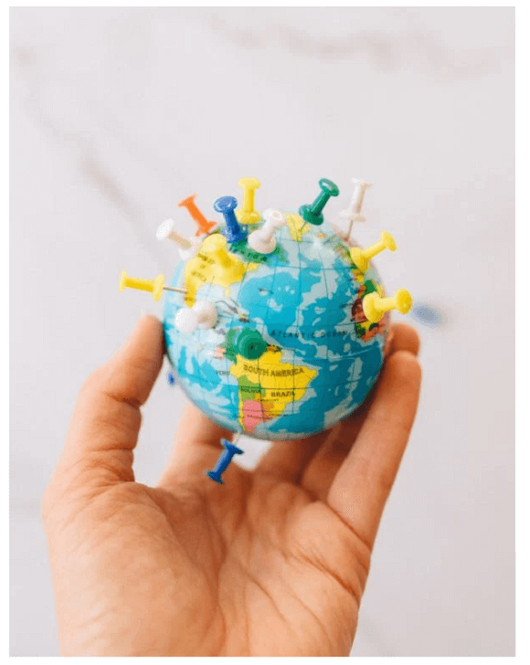
Fonte: https://www.pexels.com
Países Desenvolvidos: Em muitos países desenvolvidos, a participação das mulheres na força de trabalho
aumentou consideravelmente nas últimas décadas. Por exemplo, na Suécia e na Noruega, as taxas de
participação das mulheres na força de trabalho estão entre as mais altas do mundo, com mais de 75% das
mulheres economicamente ativas. Isso ocorreu em parte devido a políticas de igualdade de gênero, licença
parental e creches acessíveis.
Países em Desenvolvimento: Em países em desenvolvimento, a participação das mulheres no mercado de trabalho
também está em crescimento, embora a taxas variem amplamente. Em algumas regiões da Ásia, como o Japão, a
participação das mulheres na força de trabalho tem aumentado gradualmente, mas ainda enfrenta desafios em
relação a oportunidades de liderança e igualdade salarial.
Em resumo, a PEA é um conceito essencial para entender a economia e o mercado de trabalho de uma nação. A
evolução da inserção das mulheres no mercado de trabalho representa uma mudança significativa nas últimas
décadas, embora desigualdades de gênero ainda persistam em muitos lugares. É fundamental continuar
promovendo políticas e práticas que incentivem a igualdade de oportunidades e a participação plena das
mulheres na força de trabalho, contribuindo assim para um desenvolvimento econômico mais inclusivo e
sustentável.
Alimentação: Compreendendo a Nutrição e a Segurança Alimentar
O tema da alimentação é central quando discutimos o bem-estar das populações e o desenvolvimento de uma
nação. Vai muito além do simples ato de comer e envolve questões críticas, como nutrição, segurança
alimentar e soberania alimentar. Para entendermos o panorama completo, precisamos mergulhar mais
profundamente nesses conceitos.
Nutrição: A nutrição não se refere apenas à quantidade de alimentos consumidos, mas também
à qualidade dos nutrientes obtidos a partir desses alimentos. É essencial para o crescimento e
desenvolvimento saudáveis, bem como para a prevenção de doenças. A desnutrição, que inclui a subnutrição
(consumo insuficiente de nutrientes essenciais) e a fome (escassez crônica de alimentos), é um problema
persistente em muitas partes do mundo.
Segurança Alimentar: A segurança alimentar é um conceito que vai além da simples
disponibilidade de alimentos. Refere-se à garantia de que todas as pessoas tenham acesso físico, econômico e
social a alimentos suficientes, seguros e nutritivos para atender às suas necessidades alimentares e
preferências culturais. A insegurança alimentar é um desafio global, afetando milhões de pessoas em todo o
mundo.
Soberania Alimentar: A soberania alimentar envolve o direito dos países e comunidades a
definirem suas próprias políticas alimentares e agrícolas, sem dependência excessiva de importações de
alimentos. Isso inclui o fortalecimento da produção local, o apoio à agricultura familiar e a promoção da
diversidade de cultivos. A soberania alimentar visa garantir que as populações tenham controle sobre sua
própria produção e acesso a alimentos saudáveis.
Subnutrição no Mundo: Segundo a Organização das Nações Unidas para a Alimentação e a
Agricultura (FAO), em 2020, aproximadamente 9,9% da população global, ou seja, quase 768 milhões de pessoas,
estavam subnutridas, enfrentando insegurança alimentar.
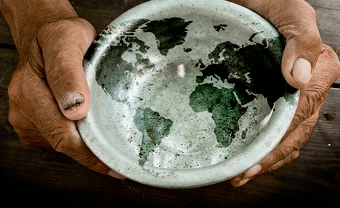
Fonte: https://pixabay.com/pt.
Fome Crônica em Regiões Vulneráveis: Regiões como o Corno de África e partes da Ásia
continuam a enfrentar desafios significativos relacionados à fome crônica devido a fatores como conflitos,
mudanças climáticas e instabilidade política.
Soberania Alimentar em Ação: Em alguns países da América Latina, como o Brasil, políticas de
segurança alimentar e programas de agricultura familiar foram implementados com sucesso para promover a
soberania alimentar e melhorar o acesso da população a alimentos nutritivos.
Desafios e Futuro:
O desafio de garantir a nutrição adequada e a segurança alimentar para todas as pessoas continua sendo uma
prioridade global. À medida que enfrentamos questões como o crescimento populacional, as mudanças climáticas
e a degradação ambiental, é fundamental adotar abordagens sustentáveis para a produção e distribuição de
alimentos.
Fatores do Desenvolvimento: Educação, Saúde e Alimentação
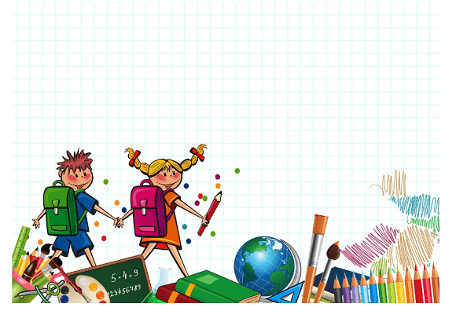
Fonte: https://pixabay.com/pt.
Educação: A educação é uma espinha dorsal do desenvolvimento econômico e social. A qualidade
do sistema educacional de um país está diretamente relacionada à sua força de trabalho qualificada e
produtiva. A alfabetização, em particular, é um indicador crítico, pois a capacidade de ler e escrever
desempenha um papel fundamental no acesso ao conhecimento e no sucesso no mercado de trabalho. Um exemplo
notável é o caso da Finlândia, que investiu fortemente em educação e colheu benefícios significativos,
criando uma força de trabalho altamente educada e uma sociedade próspera.
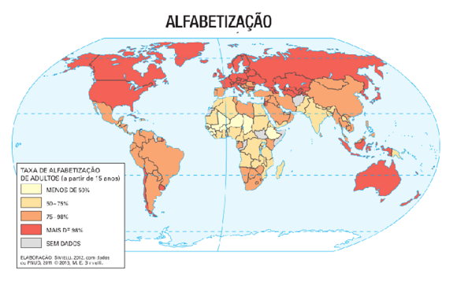
Fonte: Simielli.
Saúde: A saúde é um dos pilares fundamentais do bem-estar humano e do desenvolvimento. O
acesso a serviços médicos de qualidade e a disponibilidade de saneamento básico são vitais para garantir que
as pessoas levem vidas saudáveis e produtivas. Além disso, a nutrição adequada é essencial para o
crescimento e o desenvolvimento saudáveis, especialmente em crianças. Por exemplo, o sistema de saúde eficaz
da Suécia, com atendimento médico acessível e de alta qualidade, contribui para uma população saudável e uma
força de trabalho robusta.
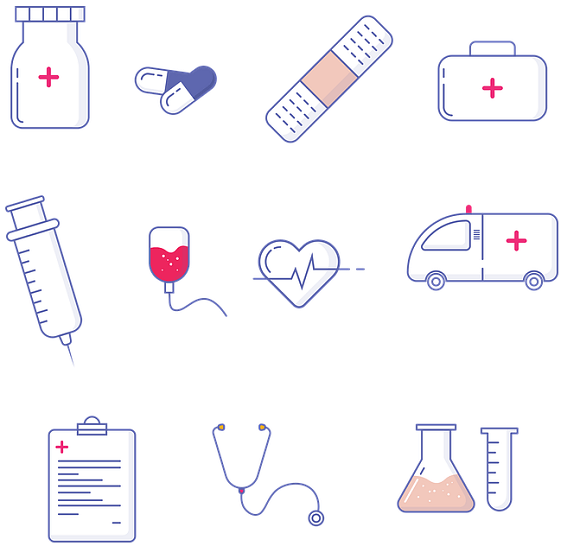
Fonte: https://pixabay.com/pt.
Alimentação: A alimentação está no centro das preocupações globais, incluindo a segurança e
a soberania alimentar. A subnutrição e a fome afetam milhões de pessoas em todo o mundo, prejudicando seu
desenvolvimento físico e cognitivo. A segurança alimentar é a garantia de que as pessoas tenham acesso
constante a alimentos suficientes e nutritivos. A soberania alimentar vai além, envolvendo o direito das
nações de determinar suas políticas alimentares e promover práticas agrícolas sustentáveis. Um exemplo
notável é o Brasil, que implementou programas de segurança alimentar e apoiou a agricultura familiar,
melhorando a disponibilidade de alimentos nutritivos para sua população.
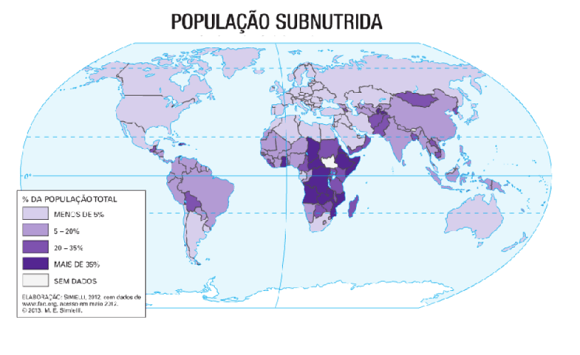
Fonte: Simielli.
Desafios e Perspectivas Futuras: Abordar esses fatores do desenvolvimento é crucial para
melhorar a qualidade de vida das populações em todo o mundo. À medida que enfrentamos desafios como o
crescimento populacional, as mudanças climáticas e as disparidades econômicas, é fundamental adotar
políticas e práticas que garantam acesso à educação de qualidade, cuidados de saúde adequados e alimentos
nutritivos. Promover a igualdade de oportunidades é uma parte essencial da busca por um desenvolvimento
sustentável e inclusivo.
Em resumo, educação, saúde e alimentação desempenham papéis interligados e fundamentais no desenvolvimento de
indivíduos e na prosperidade das nações. Compreender esses fatores e trabalhar para melhorá-los é essencial
para construir um mundo mais equitativo e próspero.
Desenvolvimento: A Complexidade da Comparação entre Países
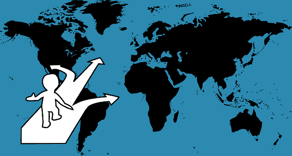
Fonte: https://pixabay.com/pt.
A avaliação do desenvolvimento de diferentes nações é uma tarefa complexa e desafiadora. À primeira vista,
pode parecer simples comparar países e classificá-los como mais ou menos desenvolvidos. No entanto, uma
análise mais profunda revela a intricada teia de fatores que moldam o desenvolvimento e nos alerta sobre a
simplificação excessiva dessa questão.
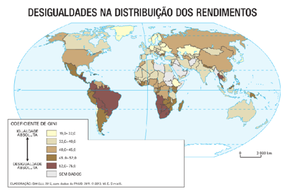
Fonte: Simielli.
Primeiramente, é importante compreender que o desenvolvimento não é um conceito unidimensional. Ele é
multifacetado, abrangendo diversos aspectos da vida de uma sociedade, como a qualidade de vida das pessoas,
a saúde, a educação, a economia, o meio ambiente e muito mais. Tentar resumir essa complexidade em uma única
medida, como o Produto Interno Bruto (PIB) per capita, pode ser enganador.
Além disso, o que significa desenvolvimento pode variar amplamente entre diferentes culturas e contextos. Uma
sociedade pode valorizar mais a qualidade de vida, o bem-estar das pessoas e a igualdade social em
detrimento do crescimento econômico desenfreado. Outra pode priorizar o crescimento econômico, mesmo que
isso resulte em desigualdades sociais significativas.
Comparar países também requer considerar as diferenças históricas, geográficas, culturais e políticas que
moldaram suas trajetórias. Países que enfrentaram desafios únicos, como conflitos armados, colonização,
desastres naturais ou regimes políticos opressivos, podem ter enfrentado obstáculos significativos ao seu
desenvolvimento.
Além disso, a simples categorização de países em "desenvolvidos" e "em desenvolvimento" não reflete a
heterogeneidade interna de cada nação. Dentro de qualquer país, existem disparidades substanciais em termos
de riqueza, acesso à educação, saúde e oportunidades econômicas.
Portanto, afirmar que um país é mais desenvolvido do que outro sem levar em consideração todos esses fatores
pode ser enganoso e injusto. Em vez de comparações simplistas, é mais útil adotar uma abordagem holística ao
avaliar o desenvolvimento, considerando múltiplos indicadores e compreendendo as nuances de cada contexto.
Em suma, o desenvolvimento é uma questão complexa e multifacetada, e a comparação entre países requer uma
análise cuidadosa e contextualizada. É fundamental reconhecer que nem sempre é válido classificar um país
como mais desenvolvido do que outro sem considerar todas as variáveis que influenciam o bem-estar e o
progresso de uma sociedade.
A curiosidade e a vontade de entender o mundo ao nosso redor são fundamentais para fazer
perguntas e contribuir com a construção do conhecimento científico.
P:
Ouvimos muito sobre o desenvolvimento econômico, mas o que exatamente significa qualidade de vida e como
ela está relacionada ao desenvolvimento?
R:
Excelente pergunta! A qualidade de vida se refere ao bem-estar geral das pessoas em uma sociedade e engloba
diversos aspectos, como acesso à educação de qualidade, assistência médica adequada, moradia digna,
segurança, liberdade, meio ambiente saudável e muito mais. O desenvolvimento, por sua vez, está
intrinsecamente ligado à qualidade de vida. Um país que busca o desenvolvimento econômico deve fazê-lo de
forma a melhorar a qualidade de vida de sua população, garantindo não apenas crescimento econômico, mas
também igualdade de oportunidades e bem-estar para todos.
P:
Por que é tão difícil comparar o desenvolvimento entre países? Não podemos simplesmente usar indicadores
econômicos, como o PIB per capita?
R:
Ótima pergunta! e vamos estudar esse tópico também na próxima aula. Embora o PIB per capita (Produto Interno
Bruto) seja um indicador importante, ele não é suficiente para capturar toda a complexidade do
desenvolvimento. Comparar países envolve muito mais do que apenas medir a produção econômica. É necessário
considerar uma série de fatores, como acesso à educação, cuidados de saúde, igualdade de gênero,
distribuição de renda, preservação ambiental e qualidade de vida em geral. Essa abordagem mais holística nos
ajuda a entender melhor como diferentes nações estão progredindo em várias dimensões.
P:
Vejo que a infraestrutura de uma cidade pode variar muito dentro de um mesmo país. Como isso acontece e
por que é importante?
R:
A variação na distribuição da infraestrutura do território mesmo dentro de um país é uma realidade comum.
Isso ocorre devido a disparidades econômicas, acesso desigual à educação, serviços de saúde, oportunidades
de emprego e outros fatores. É importante reconhecer essas diferenças, pois nos lembram que o
desenvolvimento não é uniforme e que algumas comunidades podem estar em desvantagem. Governos e organizações
trabalham para reduzir essas disparidades, garantindo que o desenvolvimento beneficie a todos os cidadãos,
não apenas alguns grupos privilegiados.
Hora de refletir!
Como você definiria o desenvolvimento de uma nação? O que, em sua opinião, são os principais indicadores
de uma alta qualidade de vida?
Você acha que é justo comparar dois países apenas com base em seu Produto Interno Bruto (PIB) per
capita? Quais outros fatores você consideraria ao fazer comparações entre nações?
Pode citar exemplos de desigualdades internas em um país que afetam a qualidade de vida das pessoas?
Como essas desigualdades podem ser abordadas?
Qual é o papel das dimensões sociais e ambientais no desenvolvimento de uma nação? Você acredita que a
sustentabilidade ambiental é uma parte crucial do desenvolvimento equitativo?
Desafio - Jornada do herói: O Chamado à Aventura
Na aula passada entramos em contato com o primeiro estágio da jornada do herói, o Mundo Comum. Queremos
pensar e escrever o enredo de um jogo sobre a dinâmica global. O mundo comum é a descrição do cenário.
Agora vamos conhecer o segundo estágio: O chamado à Aventura.
Instruções
Forme um grupo com 5-6 estudantes;
Leia o texto abaixo e discuta com seu grupo o conteúdo das questões;
Faça anotações em seu caderno;
Seja criativo, use os conhecimentos que você já possui sobre o Desafio.
Tempo da atividade: 25 minutos.
O Chamado à Aventura (2)
O Mundo Comum na maioria dos jogos ou filmes aparece como algo estático, sem graça. Entretanto, as
sementes da mudanças já estão crescendo e só falta uma nova energia para que germinem.
A cena de abertura de Tomb Raider revela menos de trinta segundos do mundo normal da Heroína
Lara Croft antes de introduzir o incidente: o navio de Lara encalha e ela mal sobrevive ao violento
acidente, acabando sozinha e com medo em uma ilha tropical desconhecida.
Em Star Wars, R2-D2 é carrega o pedido urgente de ajuda da Princesa Leia ao nosso Herói, Luke.
Em A Pedra Filosofal, Harry Porter recebe cartas no dia de seu aniversário entregues por
corujas, anunciando que está na hora de ir para Hogwarts.
Imaginem a cena: Uma reserva indígena está sendo invadida por criminosos. Poderíamos descrever como algo
assim:
“Lança-se a sombra do problema sobre Nossa Tribo. Sentimos o chamado - nos estômagos que roncam, nas
nossas crianças famintas que choram. Por toda a extensão em volta, a terra está seca e estéril e,
evidentemente, é preciso que alguém saia e vá além do território familiar. Essa terra desconhecida é
estranha e nos enche de medo, mas a pressão sobe, e é preciso fazer alguma coisa, enfrentar riscos,
para que a vida possa continuar.
Um vulto emerge, visto através da fumaça da fogueira. Ê um dos anciãos de Nossa Tribo e ele aponta
para você. Isso mesmo: você foi escolhido como Buscador, Aquele que Sai em Busca, e foi chamado para
começar uma nova procura. Terá que arriscar a própria vida para que a vida maior da Nossa Tribo
possa continuar.”
O traço comum dessas trechos de histórias é que existe um evento que liga o motor da história, após ter
apresentado o personagem principal, é hora de enfrentar seu objetivo.
O Chamado à Aventura pode vir através de um mensagem, um incidente, uma declaração de guerra, etc. Também
pode surgir de dentro do herói, um desconforto com a realidade em sua volta até o lançar em uma
aventura.
Sincronicidade
Pode ocorrer uma série de eventos ou mesmo algo por acaso que faz com que o herói vislumbre seu chamado
para a aventura.
Levantando a questão dramática
É no mundo comum do herói que vai surgir a questão dramática principal do jogo ou do filme. Toda boa
história levanta uma série de perguntas sobre o herói. Será que ela vai atingir seu objetivo? Superar
seu defeito? Aprender sua lição? Ou voltar para casa? Conseguir o outo ou ganhar o jogo?
Tentação
O herói pode ficar encantado com uma viagem à um local exótico, ou ouvir falar de um boato de um tesouro
perdido, como em Uncharted 4: A Thief's End.
Arautos da mudança
Os arautos eram os emissários de um príncipe na Idade média responsáveis por enviar mensagens e fazer
ouvir as ordens dele. O personagem Arauto pode ser positivo, negativo ou neutro, mas sempre serve para
desencadear o movimento da história, apresentando o herói um convite ou desafio para enfrentar o
desconhecido.
Muitos vezes o herói não percebe que seu Mundo Comum possui algo de errado, ai que entra o personagem do
arauto.
Reconhecimento
Recorrente nos contos populares é a figura do vilão que percorre o território do herói, as vezes fazendo
perguntas pela vizinhança ou pedindo informações sobre o local. Isso pode levar a um Chamado à Aventura.
Por exemplo, uma empresa pretende se instalar em uma pequena cidade, mas na verdade quer esconder lixo
radioativo no solo.
Desorientação e desconforto
Muitas vezes, o Chamado à Aventura pode ser perturbador e desorientador para o herói. Pode ocorrer uma
evento, uma briga, uma injustiça que deixa o herói “sem chão” e o faz pensar e o faz crescer, amadurecer
na história.
Carência ou necessidade
Um Chamado à Aventura pode chegar sob a forma de uma perda ou subtração da vida do herói no Mundo Comum.
No jogo Final Fight, a filha do prefeito da cidade de Metro
City foi sequestrada pela gangue Mad Gear. O ex-lutador de box decide ir atrás dela e combater a gangue
com suas próprias mãos. Na franquia de Super Mario Bros, o jogo utiliza, da mesma forma, o
resgate da Princesa Peach do inimigo Bowser como recurso para desenvolver o enredo da história.
Sem opções
As vezes o herói não tem opções a não ser se lançar na aventura. Pode ter sido testemunha de um crime e
precisa fugir para outro local e enfrentar os desafios.
Advertências para os heróis trágicos
Nem todos os Chamados à Aventura são convites positivos. Podem ser avisos de perigos ou advertências de
desgraça, algo como: ser for por esse caminho irá se dar mal.
Portanto, o Chamado à Aventura é um processo de seleção. Surge em uma sociedade uma situação instável, e
alguém se oferece como voluntário ou é escolhido para assumir a responsabilidade. Os heróis relutantes
têm que ser chamados muitas vezes, pois tentam evitar essa responsabilidade. Os heróis mais dispostos
logo respondem a chamados internos e nem precisam de pressões externas. Eles mesmos se selecionaram para
a aventura. Mas este tipo é raro, e a maior parte dos heróis tem que ser aliciada, empurrada ou tentada
para a aventura. Muitos deles tentam dar o fora ou seja, recusam o chamado.
SIMIELLI, Maria Elena. Geoatlas básico: Mapas políticos, mapas físicos, mapas temáticos e
imagens de satélites.
VOGLER, Christopher. A jornada do escritor: estruturas míticas para escritores.
Tradução de Ana Maria Machado. 2.ed. Rio de Janeiro: Nova Fronteira, 2006.
SKOLNICK, Evan. Video game storytelling: what every developer needs to know about
narrative techniques.New Yoirk: Watson-Guptill, 2014.